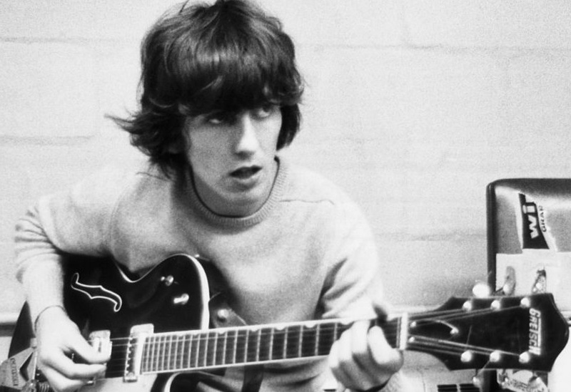

Revolver
Revolver adalah studio album ketujuh oleh The Beatles. Album ini dirilis pada 5 Agustus 1966, disertai dengan single sisi A ganda "Eleanor Rigby" / "Yellow Submarine".
Album ini adalah proyek rekaman terakhir The Beatles sebelum pensiun sebagai pemain live dan menandai penggunaan teknologi studio yang paling terang-terangan oleh grup hingga saat ini, membangun kemajuan dari rilisan akhir tahun 1965 mereka Rubber Soul. Sejak itu dianggap sebagai salah satu album terbesar dan paling inovatif dalam sejarah musik populer, dengan pengakuan berpusat pada jangkauan gaya musik, suara yang beragam, dan konten lirik.

Daftar lagu
sisi pertama
- Taxman
- Eleanor Rigby
- I'm Only Sleeping
- Love You To
- Here, There and Everywhere
- Yellow Submarine
- She Said She Said
sisi kedua
- Good Day Sunshine
- And Your Bird Can Sing
- For No One
- Doctor Robert 
- I Want to Tell You
- Got to Get You into My Life
- Tomorrow Never Knows
Patung Eleanor Rigby dan George Harrison
The Beatles merekam Revolver setelah beristirahat selama tiga bulan pada awal 1966, dan selama periode ketika London dianggap sebagai ibu kota budaya era tersebut. Dianggap oleh beberapa komentator sebagai awal periode psikedelik grup, lagu-lagu tersebut mencerminkan minat mereka pada obat-obatan LSD, filsafat Timur dan avant-garde sambil membahas tema-tema seperti kematian dan transendensi dari masalah materi.
Tanpa rencana untuk mereproduksi materi baru mereka dalam konser, band ini secara bebas menggunakan pelacakan ganda otomatis, varispeed, kaset terbalik, mikrofon audio dekat, dan instrumen di luar pengaturan live standar mereka. Di antara treknya adalah "Tomorrow Never Knows", menggabungkan drone India yang berat dan kolase loop tape; "Eleanor Rigby", sebuah lagu tentang kesepian yang menampilkan oktet string sebagai satu-satunya musik pendukung; dan "Love You To", terjun ke musik klasik Hindustan. Sesi ini juga menghasilkan single non-album, "Paperback Writer" yang didukung dengan "Rain".
⬅ Album sebelumnya Menu Album selanjutnya ➡